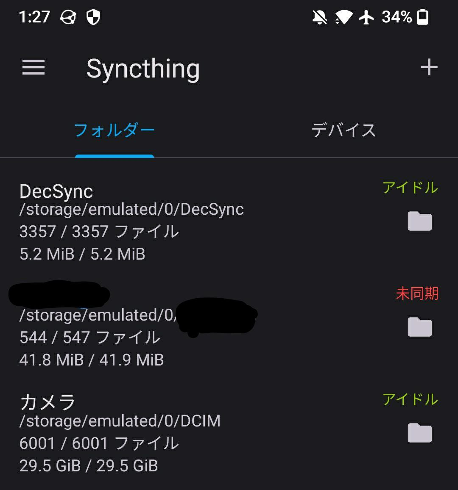

class: center, middle # 遠離大手會社，自架基本服務 .right[miaoski@COSCUP 2023] --- # Agenda 1. 宣傳: OCF 培訓活動 1. 樹莓派、Digital Ocean、還是 x86? 1. 固定 IP vs. 浮動 IP 1. 現代生活的必需品: Let's Encrypt 1. Email -- Postfix + CA + Dovecat 還有 GMail 的小鎖頭 1. 隱私的小幫手: wildcard email 1. Blog: 不用 blogger 也不用 CMS 的懶人法 1. 行事曆與聯絡人 1. 照片的雲端備份 1. 未竟之業: 貓臉辨識 --- # 宣傳: OCF 培訓活動 歡迎線上報名，或洽 OCF 攤位，以及人在現場的 Singing :D --- # 前言 Michael Bazzell 剛好也做了4集的自架服務。 --- # 樹莓派、Digital Ocean、還是 x86? * 樹莓派 - 加了散熱片 的 Pi 3 B+ - 加了散熱片 的 Pi 4 4GB 或 8GB - ODroid - Cubieboard 2 (停更) - BananaPi (停更) - NanoPi (停更) Armbian 有機會停更。 OpenWRT 有更新。 --- # 樹莓派、Digital Ocean、還是 x86? * Digital Ocean - 每月 $5 / $10 不停電 - DNS 服務很棒  --- # 樹莓派、Digital Ocean、還是 x86? * x86 - Intel NUC 系列 - 銳角雲 ❤️ - HP 600 G2 小桌電 - 等等等 <br> .small[(圖片來源: OSSLab)] --- # 固定 IP vs. 浮動 IP | IP | 好處 | 壞處 | | -- | ---- | ---- | | 浮動 | 1. 有時候就是拿不到固定 IP <br> 2. 還是可以透過 ISP 轉信 | 換 IP 的時候，MX 在 TTL 內有機會 bounce | | 固定 | SMTPS, SPF, DKIM, DMARC 可以自理 | 1. 需要固定 IP <br> 2. Hinet 固 I 仍然是 dial-up IP, 還是會被大公司擋信 | * 建議固定 IP 自架 postfix 。 * 迫於現實，仍需使用 msa 或 msr.hinet.net 轉信。 --- # 推薦幾個必備的套件 ``` apt install pppoeconf # 上網一定要的 apt install ufw # 防火牆 apt install ssh vim screen apt install mutt postfix # Email apt install weechat # IRC 客戶端，很好用 apt install mosquitto # 順便跑個 MQTT + HomeAssistant 吧? apt install supervisor # 程式掛點的話自動把它跑起來 ``` --- # 裸奔在網路上還是小心一點 * ssh 關掉使用密碼登入 ``` PasswordAuthentication no PermitRootLogin no PubkeyAuthentication yes ``` * ufw 開這幾個就好 ``` 22/tcp ssh 25/tcp SMTP 993/tcp IMAPS 465/tcp SSMTP / SMTPS 995/tcp POP3S 80/tcp HTTP 443/tcp HTTPS 8883/tcp MQTTS ``` --- # 現代生活的必需品: Let's Encrypt 不論是架網站或是 SMTPS / IMAPS 都需要它～ 教學文很多，我們就跳過吧 :D - [教學課程：在 Amazon Lightsail 中使用 Let's Encrypt SSL 憑證與 WordPress 執行個體](https://lightsail.aws.amazon.com/ls/docs/zh_tw/articles/amazon-lightsail-using-lets-encrypt-certificates-with-wordpress) - [Debian/Ubuntu 環境申請和套用 Let's Encrypt 免費 SSL 憑證教學](https://www.kjnotes.com/devtools/62) - [HTTPS免費憑證申請 - Let's Encrypt](https://ithelp.ithome.com.tw/articles/10251367) 假設你已經申請好，也設定好 `certbot renew` 的 crontab 了... --- # Email -- Postfix + CA * 透過 Hinet 轉信 * 很容易設定 * `[msa.hinet.net]:587` 有機會出現 SASL authentication failed * 仍然推薦使用，因為不確定 port 25 有沒有做 STARTTLS * 除非端到端加密，不然 ISP/轉信點 都看得到明文 * 可以使用 S/MIME 加密確保信件完整性 在 `/etc/postfix/sasl/passwd` 加上 ``` [msa.hinet.net] email@msa.hinet.net:password [msr.hinet.net] email@msa.hinet.net:password [msa.hinet.net]:587 email@msa.hinet.net:password [msr.hinet.net]:587 email@msa.hinet.net:password ``` 在 `/etc/postfix/main.cf` 加上 ``` relayhost = [msa.hinet.net]:587 ``` 記得要執行 `postmap /etc/postfix/sasl/passwd` 產生 passwd.db 檔，<br> `postfix restart` 就可以了。 --- # Email -- Dovecat + CA 直接 apt install 就可以用了，除了 SSL 的部份，路徑要改成 LetsEncrypt 簽發的 SSL 憑證之外， 都不需要特別的設定。 `/etc/dovecot/conf.d/ssl.conf` 修改如下: ``` ssl = required ssl_cert = </etc/letsencrypt/live/miaoski.idv.tw-0001/fullchain.pem ssl_key = </etc/letsencrypt/live/miaoski.idv.tw-0001/privkey.pem ``` --- # Email -- 手機上可以用 K-9 Mail 使用 SMTPS / IMAPS 確保轉輸過程有加密: --- # Email -- GMail 的小鎖頭 GMail 收信的時候，會[依照加密程度](https://support.google.com/mail/answer/6330403?hl=zh-Hant)，給不同顏色的鎖頭。 如果完全沒有 TLS 的話，會顯示 紅色 (未使用加密功能)  設定 `/etc/postfix/main.cf` 裡的 TLS, 在2022年11月前可以拿到灰色的鎖頭: ``` # TLS parameters smtpd_tls_cert_file=/etc/letsencrypt/live/miaoski.idv.tw-0001/fullchain.pem smtpd_tls_key_file=/etc/letsencrypt/live/miaoski.idv.tw-0001/privkey.pem smtpd_use_tls=yes tls_random_source=dev:/dev/urandom smtpd_tls_received_header=yes smtpd_tls_session_cache_database = btree:${data_directory}/smtpd_scache smtp_tls_session_cache_database = btree:${data_directory}/smtp_scache smtp_use_tls = yes smtp_tls_note_starttls_offer=yes ``` 要拿到綠色鎖頭 (S/MIME 加密) 必須產生 X.509 密鑰對，<br> 請參考 [How To Encrypt Mails With SSL Certificates (S/MIME)](https://www.howtoforge.com/how-to-encrypt-mails-with-ssl-certificates-s-mime) --- # Email -- GMail 現在要求 SPF / DKIM 在 DigitalOcean 設定 DNS 的 TXT 欄位 * SPF: ``` TXT _spf.miaoski.idv.tw. v=spf1 mx mx:msa.hinet.net mx:msr.hinet.net ip4:168.95.4.0/24 ip4:1.34.75.56 -all TXT miaoski.idv.tw. v=spf1 include:_spf.miaoski.idv.tw -all ``` --- # 隱私的小幫手: wildcard email 註冊論壇的時候，使用不同的 email ，收到廣告信就知道誰外流的了! 新增檔案 `/etc/postfix/virtual` 並填入以下內容: ``` @miaoski.idv.tw my_unix_account @other.domain.tw my_unix_account ``` 再執行 `postmap /etc/postfix/virtual` 就可以了。 --- # 隱私的小幫手: wildcard email ## Mutt 怕回信的 email 和收到信的 wildcard email 不一樣嗎？ `~/.muttrc` 加一行就好: ``` set reverse_name = yes ``` ## 其它郵件軟體 * K-9 Email 仍然沒有支援。 * Thunderbird 必須手動修改 `From:` --- # 部落格: 不使用 Blogspot 和 CMS * 投影片可用 [remark](https://github.com/remarkjs/remark) ```markdown # Agenda 1. OCF 安麗活動 1. 樹莓派、Digital Ocean、還是 x86? 1. 固定 IP vs. 浮動 IP ``` * 文章可用 [ZeroMD](https://zerodevx.github.io/zero-md/) ```html <zero-md src="https://miaoski.github.io/escape-from-google-1.md"></zero-md> <header class="header">如何逃離 Google 之一</header> ``` * 只要有 HTTP server 就可以，不一定要綁在 GitHub 哦! --- # Syncthing 在多台裝置之間同步檔案。請參考: [SyncThing 官網](https://syncthing.net/) * 可以選擇只讀不寫、只寫不讀、雙邊同步 * 可以使用各種拓撲 --- # 行事曆與聯絡人 iOS 請參考 [Extreme Privacy: Mobile Devices](https://inteltechniques.com/blog/2023/02/16/extreme-privacy-mobile-devices/), 抱歉我真的不熟 iOS。 Android 建議使用 [DecSync CC](https://f-droid.org/packages/org.decsync.cc/) * 使用 F-Droid 安裝 * 預設放在手機的 `/storage/emulated/0/DecSync` 目錄 * 搭備 syncthing 同步到其它裝置 .center[ ] --- # 照片的雲端備份 有 SyncThing 就不需要開啟 Google 備份了。  --- # 未竟之業: 貓臉辨識 * ~~作為一個贊助人，我就想問：你承諾的開源的貓臉辨識呢？~~ * 多貓家庭的困擾: 貓貓吃喝拉撒是不是都正常 * 貓慢性腎臟病早發現早治療，效果很好 <img alt="白貓上廁所" src="coscup2023/20181113_055939.0.jpg" height="350"> --- # 參考資料 1. [如何逃離 Google 之一](http://miaoski.github.io/escape-from-google-1.html) 1. [Postfix and Dovecot SASL](https://doc.dovecot.org/configuration_manual/howto/postfix_and_dovecot_sasl/) 1. [Postfix TLS Support](https://www.postfix.org/TLS_README.html) 1. [How To Create a SPF Record For Your Domain with Google Apps](https://www.digitalocean.com/community/tutorials/how-to-create-a-spf-record-for-your-domain-with-google-apps) 1. [A Step-by-Step Guide to Installing OpenDKIM with Postfix on Ubuntu – Unleash the Power of DKIM!](https://tecadmin.net/setup-dkim-with-postfix-on-ubuntu-debian/) <br> <br> 本投影片以 [CC BY-SA 4.0](https://creativecommons.org/licenses/by-sa/4.0/) 釋出。 原始碼請參照 https://github.com/miaoski/miaoski.github.io/blob/master/coscup-2023.html